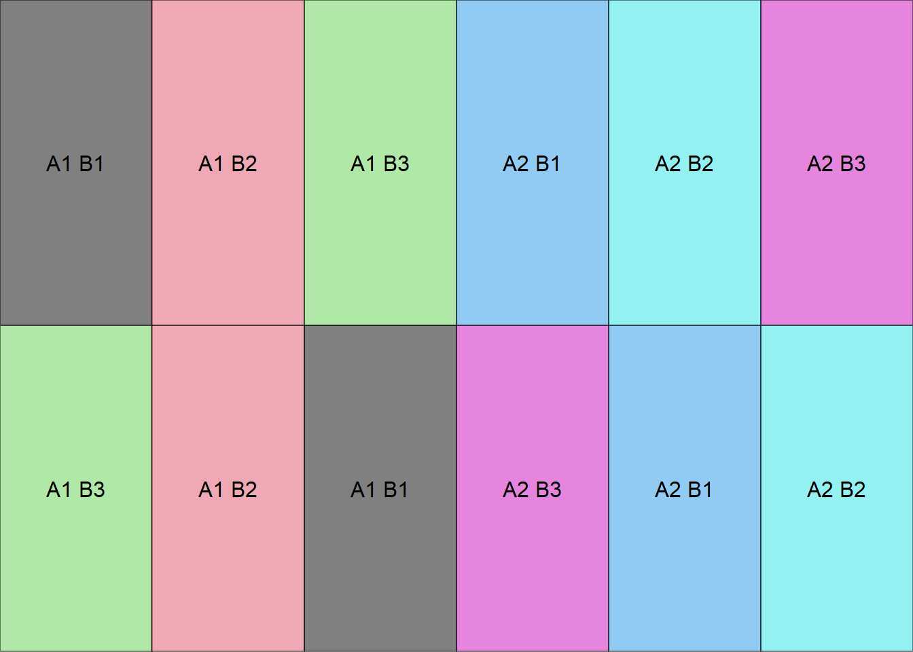
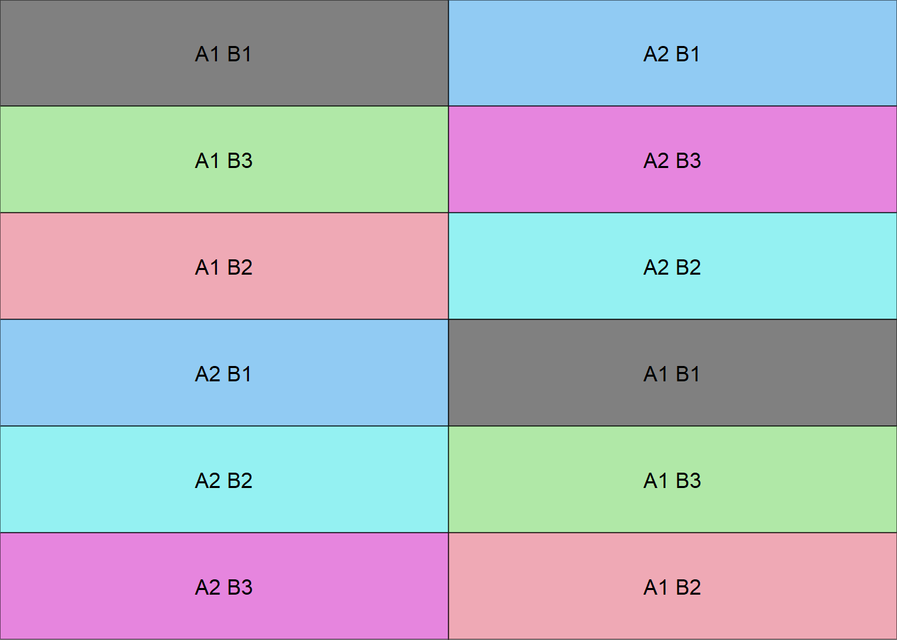

18 Esquema de Parcelas Subdivididas
- Tal como no caso de fatorial, o termo parcelas subdivididas não se refere a um tipo de delineamento e sim ao esquema do experimento, ou seja, a maneira pela qual os tratamentos são organizados.
- Nos experimentos em parcelas subdivididas, em geral, estuda-se simultaneamente dois tipos de fatores os quais são geralmente denominados de fatores primários e fatores secundários.
- Em um experimento em parcelas subdivididas, as unidades experimentais são agrupadas em parcelas as quais devem conter um número de unidades experimentais (subparcelas) igual ao número de níveis do fator secundário.
- Na instalação os níveis do fator primário (A) são distribuidos às parcelas segundo um tipo de delineamento experimental: DIC, DBC, DQL.
- Posteriormente os níveis do fator secundário (B) são distribuídos ao acaso às subparcerlas de cada parcela.Tal disposição permite obter uma estimativa geral de maior precisão para os efeitos dos tratamentos do segundo fator.
- Nos experimentos em parcelas subdivididas tem-se dois resíduos distintos: um correspondente às parcelas e outro às subparcelas dentro das parcelas.
- Em casos mais complexos, as subparcelas podem, também, ser repartidas em subsubparcelas. Tem-se, neste caso, três resíduos distintos:
- resíduo (a), referente às parcelas;
- resíduo (b), à subparcelas e
- resíduo (c), correspondendo às subsubparcelas.
18.1 Vantagens
Em comparação com experimentos fatoriais, experimentos em parcelas subdivididas são mais fáceis de instalar;
Quando os tratamentos associados aos níveis de um dos fatores exigem maior quantidade de material na unidade experimental do que os tratamentos do outro fator.
O esquema pode ser utilizado quando um fator adicional é incorporado num experimento, para ampliar seu objetivo.
Através da prévia informação, sabe-se que maiores diferenças podem ser esperadas entre os níveis de um certo fator do que entre os níveis do outro fator.
18.2 Desvantagens
Do ponto de vista estatístico, os fatoriais são, em geral, mais eficientes que os em parcelas subdivididas;
Enquanto nos fatoriais temos um são resíduo para todos os F e comparações de médias, no “split-plot” há dois resíduos, um para comparações de parcelas e outro para subparcelas;
Para parcela, o número de GL geralmente é pequeno, levando à pouca sensibilidade na análise;
Sempre que possível, é preferível utilizar experimentos fatoriais em lugar dos experimentos em parcelas subdivididas.
18.3 Modelo estatístico
O modelo linear para o experimento em parcelas subdivididas no delineamento em blocos ao acaso é dado por:
\(yijk = \mu+\tau_{i}+\gamma_{k}+(\tau\gamma)_{ik}+\beta_{j}+(\tau\beta)_{ij}+(\tau\beta\gamma)_{ijk}\)
- i = 1; 2; : : : ; a
- j = 1; 2; : : : ; b
- k = 1; 2; : : : ; r
em que:
- \(y_{ijk}\) é o valor observado no i-ésimo tratamento, k-ésimo bloco e j-ésima subparcela;
- \(\mu\) é uma constante;
- \(\tau_{i}\) é o efeito do i-ésimo fator A;
- \(\gamma_{k}\) é o efeito do k-ésimo bloco;
- \((\tau\gamma)_{ik}\) é o resíduo (a) da parcela;
- \(\beta_{j}\) é o efeito do j-ésimo fator B;
- \((\tau\beta)_ij\) é a interação entre o i-ésimo fator A e o j-ésimo fator B;
- \((\tau\beta\gamma)ijk\) é o resíduo (b) da subparcela;
18.4 Hipóteses e modelo
No experimento em parcelas subdivididas com 2 fatores, deseja-se testar a signicância de ambos os fatores. Há interesse em testar hipóteses sobre a igualdade dos efeitos do fator primário, isto é:
\[\begin{eqnarray*} \left\{ \begin{array}{ll} H_0: & \mu_1 = \mu_2 = \mu_3 = \cdots = \mu_{a} \\[.2cm] H_1: & \mu_i \neq \mu_i' \qquad i \neq i'. \end{array} \right. \end{eqnarray*}\]
e a igualdade nos efeitos do fator secundário, ou seja:
\[\begin{eqnarray*} \left\{ \begin{array}{ll} H_0: & \mu_1 = \mu_2 = \mu_3 = \cdots = \mu_{b} \\[.2cm] H_1: & \mu_i \neq \mu_i' \qquad i \neq i'. \end{array} \right. \end{eqnarray*}\]
e, ainda, se há interação entre os fatores:
\[\begin{eqnarray*} \left\{ \begin{array}{ll} H_0: & (\tau\beta)ij = 0 \mbox{para todo} i ; j \\[.2cm] H_1: & \mbox{Pelo menos um} (\tau\beta)ij \neq 0 \end{array} \right. \end{eqnarray*}\]
| CV | G.L. | S.Q. | Q.M. | Fcalc | |
|---|---|---|---|---|---|
| Bloco | \(r-1\) | \(SQ_{Bloc}\) | \(\frac{SQ_{Bloc}}{r-1}\) | \(\frac{QM_{Bloc}}{QM_{Res(a)}}\) | |
| Tratamento A | \(a - 1\) | \(SQ_{A}\) | \(\frac{SQ_{A}}{a-1}\) | \(\frac{QM_{A}}{QM_{Res(a)}}\) | |
| resíduo A | \((a-1)(r-1)\) | \(SQ_{Res(A)}\) | \(\frac{SQ_{res(A)}}{(a-1)(r-1)}\) | ||
| Parcelas | \(ar-1\) | \(SQ_{Parcelas}\) | - | ||
| Tratamento B | \(b-1\) | \(SQ_{B}\) | \(\frac{SQ_{B}}{b-1}\) | \(\frac{QM_{B}}{QM_{Res(b)}}\) | |
| Interação A x B | \((a-1)(b-1)\) | \(SQ_{AxB}\) | \(\frac{SQ_{AB}}{(a-1)(b-1)}\) | \(\frac{QM_{AxB}}{QM_{Res(b)}}\) | |
| resíduo B | \(a(a-1)(r-1)\) | \(SQ_{Res(B)}\) | \(\frac{SQ_{Res(b)}}{(r-1)(b-1)}\) | ||
| Total | \(abr-1\) | \(SQ_{Total}\) | - |
18.5 Croqui em DIC
Criando uma função para fazer um croqui (Número de coluna igual número de repetições)
# Não alterar os comandos da função
library(agricolae)
library(gridExtra)
library(grid)
croqui=function(trat,trat1,r){
sort=design.split(trat,trat1,r,design = "crd",serie=0)
sort$book$trat=as.vector(matrix(paste(sort$book$trat,sort$book$trat1),nrow =r,byrow=T))
ncol=r
sort$book$trat=as.factor(sort$book$trat)
gs <- lapply(sort$book$trat, function(ii)
grobTree(rectGrob(gp=gpar(fill=ii, alpha=0.5)),textGrob(ii)))
grid.arrange(grobs=gs, ncol=ncol)}Vetor de tratamentos
Usando a função

Criando uma função para fazer um croqui (Número de colunas igual número de tratamentos)
# Não alterar os comandos da função
library(agricolae)
library(gridExtra)
library(grid)
croqui=function(trat,trat1,r){
sort=design.split(trat,trat1,r,design = "crd",serie=0)
sort$book$trat=as.vector(t(matrix(paste(sort$book$trat,sort$book$trat1),nrow =r, byrow=T)))
sort$book$trat=as.factor(sort$book$trat)
ncol=length(levels(sort$book$trat))
gs <- lapply(sort$book$trat, function(ii)
grobTree(rectGrob(gp=gpar(fill=ii, alpha=0.5)),textGrob(ii)))
grid.arrange(grobs=gs, ncol=ncol)}Vetor de tratamentos
Usando a função

18.6 Croqui em DBC
Criando uma função para fazer um croqui (Número de coluna igual número de repetições)
# Não alterar os comandos da função
library(agricolae)
library(gridExtra)
library(grid)
croqui=function(trat,trat1,r){
sort=design.split(trat,trat1,r,design = "rcbd",serie=0)
sort$book$trat=as.vector(matrix(paste(sort$book$trat,sort$book$trat1),nrow =r,byrow=T))
ncol=r
sort$book$trat=as.factor(sort$book$trat)
gs <- lapply(sort$book$trat, function(ii)
grobTree(rectGrob(gp=gpar(fill=ii, alpha=0.5)),textGrob(ii)))
grid.arrange(grobs=gs, ncol=ncol)}Vetor de tratamentos
Usando a função

Criando uma função para fazer um croqui (Número de colunas igual número de tratamentos)
# Não alterar os comandos da função
library(agricolae)
library(gridExtra)
library(grid)
croqui=function(trat,trat1,r){
sort=design.split(trat,trat1,r,design = "rcbd",serie=0)
sort$book$trat=as.vector(t(matrix(paste(sort$book$trat,sort$book$trat1),nrow =r, byrow=T)))
sort$book$trat=as.factor(sort$book$trat)
ncol=length(levels(sort$book$trat))
gs <- lapply(sort$book$trat, function(ii)
grobTree(rectGrob(gp=gpar(fill=ii, alpha=0.5)),textGrob(ii)))
grid.arrange(grobs=gs, ncol=ncol)}Vetor de tratamentos
Usando a função
18.7 Exemplo 1
Um experimento foi realizado com o intuito de avaliar 5 tratamentos na linha e entrelinha de um pomar. O experimento foi instalado em Delineamento em blocos casualizados com 12 repetições por tratamento. Foi analisado o carbono da biomassa microbiana (CBM).
RESP=c(224.92, 180.32, 130.19, 110.31, 163.74,193.03, 211.49, 137.65, 127.15, 203.39,
182.36, 124.75, 177.70, 231.01, 202.14,214.89, 198.42, 267.85, 207.67, 176.74,
162.18, 124.59, 158.99, 209.12, 128.14,113.95, 215.53, 190.51, 174.58, 148.70,
150.90, 209.03, 210.40, 199.03, 237.05,196.97, 176.06, 263.27, 240.19, 160.72,
239.90, 188.07, 251.35, 215.45, 198.50,271.42, 226.56, 217.65, 213.69, 101.26,
115.41, 140.10, 117.67, 106.45, 139.34,104.22, 206.13, 195.89, 147.11, 122.93,
176.55, 173.63, 112.83, 184.82, 178.18, 115.85, 183.89, 134.92, 086.49, 103.96,
096.33, 091.64, 157.76, 107.45, 106.61, 095.28, 152.37, 066.02, 125.75, 075.34,
088.64, 104.00, 066.38, 084.74, 101.76,173.70, 101.24, 143.71, 119.88, 157.79,
070.42, 152.75, 111.65, 153.08, 146.64,142.57, 098.96, 065.92, 065.62, 063.26,
095.72, 084.14, 054.92, 090.49, 112.11,102.68, 144.77, 122.58, 125.14, 127.61,
117.14, 147.87, 156.18, 154.82, 183.91,159.11, 155.41, 184.55, 121.39, 155.77)
FATOR1=rep(rep(c("L","EL"), e=12),5); FATOR1=factor(FATOR1)
FATOR2=rep(c(paste("T",1:5)),e=24); FATOR2=factor(FATOR2)
repe=rep(c(paste("R",1:12)),10); repe=factor(repe)
dados = data.frame(FATOR1,FATOR2,repe,RESP)18.8 Estatística descritiva
"Média" = with(dados, mean(RESP))
"Variância" = with(dados, var(RESP))
Desvio = with(dados, sd(RESP))
CV = Desvio / Média * 100
desc = cbind(Média, Variância, Desvio, CV)
rownames(desc) = 'CBM'
kable(round(desc,2), align="l", format="pandoc", format.args = list(big.mark="."))| Média | Variância | Desvio | CV | |
|---|---|---|---|---|
| CBM | 151.58 | 2.547.35 | 50.47 | 33.3 |
18.8.1 Fator 1 (Linha e Entrelinha)
Médias1 = with(dados, tapply(RESP, FATOR1, mean))
Variâncias1 = with(dados, tapply(RESP, FATOR1, var))
Desvios1 = with(dados, tapply(RESP, FATOR1, sd))
CV1 = Desvios1 / Médias1 * 100
Desc1 = cbind(Médias1, Variâncias1, Desvios1, CV1)
kable(round(Desc1,2),align="l")| Médias1 | Variâncias1 | Desvios1 | CV1 | |
|---|---|---|---|---|
| EL | 166.39 | 2297.00 | 47.93 | 28.80 |
| L | 136.76 | 2394.44 | 48.93 | 35.78 |
18.8.2 Fator 2 (Manejo)
Médias2 = with(dados, tapply(RESP, FATOR2, mean))
Variâncias2 = with(dados, tapply(RESP, FATOR2, var))
Desvios2 = with(dados, tapply(RESP, FATOR2, sd))
CV2 = Desvios2 / Médias2 * 100
Desc2 = cbind(Médias2, Variâncias2, Desvios2, CV2)
kable(round(Desc2,2),align="l")| Médias2 | Variâncias2 | Desvios2 | CV2 | |
|---|---|---|---|---|
| T 1 | 180.02 | 1599.93 | 40.00 | 22.22 |
| T 2 | 201.00 | 1678.32 | 40.97 | 20.38 |
| T 3 | 139.55 | 1560.41 | 39.50 | 28.31 |
| T 4 | 116.90 | 1085.31 | 32.94 | 28.18 |
| T 5 | 120.42 | 1443.94 | 38.00 | 31.56 |
18.8.3 Repetição
Médias4 = with(dados, tapply(RESP, repe, mean))
Variâncias4 = with(dados, tapply(RESP, repe, var))
Desvios4 = with(dados, tapply(RESP, repe, sd))
CV4 = Desvios4/ Médias4 * 100
Desc4 = cbind(Médias4, Variâncias4, Desvios4, CV4)
kable(round(Desc4,2),align="l")| Médias4 | Variâncias4 | Desvios4 | CV4 | |
|---|---|---|---|---|
| R 1 | 158.07 | 1917.57 | 43.79 | 27.70 |
| R 10 | 164.26 | 3154.85 | 56.17 | 34.19 |
| R 11 | 152.76 | 2803.26 | 52.95 | 34.66 |
| R 12 | 146.87 | 2228.39 | 47.21 | 32.14 |
| R 2 | 153.81 | 3815.91 | 61.77 | 40.16 |
| R 3 | 140.69 | 3301.19 | 57.46 | 40.84 |
| R 4 | 145.15 | 2131.01 | 46.16 | 31.80 |
| R 5 | 159.66 | 1780.25 | 42.19 | 26.43 |
| R 6 | 148.27 | 3522.03 | 59.35 | 40.03 |
| R 7 | 157.96 | 3902.06 | 62.47 | 39.54 |
| R 8 | 145.57 | 2218.76 | 47.10 | 32.36 |
| R 9 | 145.87 | 2264.97 | 47.59 | 32.63 |
18.8.4 Juntando os fatores
Médias3 = with(dados, tapply(RESP, list(FATOR1,FATOR2), mean))
Variâncias3 = with(dados, tapply(RESP, list(FATOR1,FATOR2), var))
Desvios3 = with(dados, tapply(RESP, list(FATOR1,FATOR2), sd))
CV3 = Desvios3/Médias3 * 100
Desc3 = rbind(Médias3, Variâncias3, Desvios3, CV3)
rownames(Desc3)=c("Média.L","Média.EL","Variância.L","Variância.EL", "Desvio.L","Desvio.EL", "CV.L","CV.EL")
kable(round(Desc3,2),align="l")| T 1 | T 2 | T 3 | T 4 | T 5 | |
|---|---|---|---|---|---|
| Média.L | 194.28 | 220.76 | 136.59 | 131.27 | 149.07 |
| Média.EL | 165.78 | 181.23 | 142.52 | 102.53 | 91.76 |
| Variância.L | 1398.17 | 1208.34 | 1588.68 | 904.49 | 505.68 |
| Variância.EL | 1504.10 | 1448.57 | 1654.85 | 914.33 | 721.90 |
| Desvio.L | 37.39 | 34.76 | 39.86 | 30.07 | 22.49 |
| Desvio.EL | 38.78 | 38.06 | 40.68 | 30.24 | 26.87 |
| CV.L | 19.25 | 15.75 | 29.18 | 22.91 | 15.08 |
| CV.EL | 23.39 | 21.00 | 28.54 | 29.49 | 29.28 |
18.9 Gráficos exploratórios
18.9.1 Gráfico de caixas (Boxplot)
18.9.1.1 Fator 1
caixas=with(dados, car::Boxplot(RESP ~ FATOR1, vertical=T,las=1, col='Lightyellow'))
points(Médias1, pch='+', cex=1.5, col='red')

18.9.2 Interação
library(gplots)
library(lattice)
with(dados, xyplot(RESP ~ FATOR1|FATOR2, groups=repe, aspect="xy", type="o", ylab='CBM',
strip=strip.custom(strip.names=TRUE, strip.levels=TRUE)))
with(dados, xyplot(RESP ~ FATOR1|repe, groups=FATOR2, aspect="xy", type="o", ylab='CBM',
strip=strip.custom(strip.names=TRUE, strip.levels=TRUE)))
with(dados, xyplot(RESP ~ FATOR2|repe, groups=FATOR1, aspect="xy", type="o", ylab='CBM',
strip=strip.custom(strip.names=TRUE, strip.levels=TRUE)))with(dados, interaction.plot(FATOR2, FATOR1, RESP, las=1, col=1:6, bty='l',
xlab='', ylab='CBM', trace.label="repe"))# FATOR1 e FATOR2
with(dados, interaction.plot(FATOR1, FATOR2, RESP, las=1, col=1:6, bty='l',
xlab='', ylab='CBM', trace.label="FATOR2"))18.10 Análise de Variância
\[\begin{eqnarray*} \left\{ \begin{array}{ll} H_0: & \mu_1 = \mu_2 = \mu_3 = \cdots = \mu_{a} \\[.2cm] H_1: & \mu_i \neq \mu_i' \qquad i \neq i'. \end{array} \right. \end{eqnarray*}\]
e a igualdade nos efeitos do fator secundário, ou seja: \[\begin{eqnarray*} \left\{ \begin{array}{ll} H_0: & \mu_1 = \mu_2 = \mu_3 = \cdots = \mu_{b} \\[.2cm] H_1: & \mu_i \neq \mu_i' \qquad i \neq i'. \end{array} \right. \end{eqnarray*}\]
e, ainda, se há interação entre os fatores:
\[\begin{eqnarray*} \left\{ \begin{array}{ll} H_0: & (\tau\beta)ij = 0 \mbox{para todo} i ; j \\[.2cm] H_1: & \mbox{Pelo menos um} (\tau\beta)ij \neq 0 \end{array} \right. \end{eqnarray*}\]
##
## Error: repe
## Df Sum Sq Mean Sq F value Pr(>F)
## Residuals 11 5772 524.7
##
## Error: repe:FATOR1
## Df Sum Sq Mean Sq F value Pr(>F)
## FATOR1 1 26339 26339 12.74 0.0044 **
## Residuals 11 22748 2068
## ---
## Signif. codes: 0 '***' 0.001 '**' 0.01 '*' 0.05 '.' 0.1 ' ' 1
##
## Error: Within
## Df Sum Sq Mean Sq F value Pr(>F)
## FATOR2 4 133672 33418 28.882 2.47e-15 ***
## FATOR1:FATOR2 4 12783 3196 2.762 0.0325 *
## Residuals 88 101820 1157
## ---
## Signif. codes: 0 '***' 0.001 '**' 0.01 '*' 0.05 '.' 0.1 ' ' 1Interação significativa (\(p=0,0325\))
18.10.1 Usando o pacote agricolae
##
## ANALYSIS SPLIT PLOT: RESP
## Class level information
##
## FATOR1 : L EL
## FATOR2 : T 1 T 2 T 3 T 4 T 5
## repe : R 1 R 2 R 3 R 4 R 5 R 6 R 7 R 8 R 9 R 10 R 11 R 12
##
## Number of observations: 120
##
## Analysis of Variance Table
##
## Response: RESP
## Df Sum Sq Mean Sq F value Pr(>F)
## repe 11 5772 525 0.2537 0.984072
## FATOR1 1 26339 26339 12.7363 0.004404 **
## Ea 11 22748 2068
## FATOR2 4 133672 33418 28.8821 2.442e-15 ***
## FATOR1:FATOR2 4 12783 3196 2.7620 0.032468 *
## Eb 88 101820 1157
## ---
## Signif. codes: 0 '***' 0.001 '**' 0.01 '*' 0.05 '.' 0.1 ' ' 1
##
## cv(a) = 30 %, cv(b) = 22.4 %, Mean = 151.578518.10.2 Usando o pacote easyanova
## $`Marginal anova (Type III Sum of Squares)`
## numDF denDF F-value p-value
## plot 1 11 12.736294 0.0044
## split.plot 4 88 28.882103 <.0001
## block 11 11 0.253728 0.9841
## plot:split.plot 4 88 2.761997 0.032518.11 Pressupostos
18.11.1 Normalidade dos erros
Uma forma de verificação é usar como esquema fatorial
\[\begin{eqnarray*} \left\{ \begin{array}{ll} H_0: \mbox{Erros seguem distribuição normal}\\[.2cm] H_1: \mbox{Erros não seguem distribuição normal.} \end{array} \right. \end{eqnarray*}\]
## Df Sum Sq Mean Sq F value Pr(>F)
## repe 11 5772 525 0.417 0.9455
## FATOR1 1 26339 26339 20.933 1.38e-05 ***
## FATOR2 4 133672 33418 26.559 5.66e-15 ***
## FATOR1:FATOR2 4 12783 3196 2.540 0.0445 *
## Residuals 99 124568 1258
## ---
## Signif. codes: 0 '***' 0.001 '**' 0.01 '*' 0.05 '.' 0.1 ' ' 1##
## Shapiro-Wilk normality test
##
## data: mod.pres$res
## W = 0.99207, p-value = 0.7273Como p-valor(\(p=0,7273\)) é maior que o nível de significância adotado (\(p=0,05\)), não se rejeita \(H_0\). Logo, os erros seguem distribuição normal.
18.11.2 Homogeneidade de variâncias
\[\begin{eqnarray*} \left\{ \begin{array}{ll} H_0: \mbox{As variâncias dos erros são homogêneas}\\[.2cm] H_1: \mbox{As variâncias dos erros não são homogêneas} \end{array} \right. \end{eqnarray*}\]
18.11.2.1 Para Fator 1
##
## Bartlett test of homogeneity of variances
##
## data: mod.pres$residuals by FATOR1
## Bartlett's K-squared = 0.022345, df = 1, p-value = 0.8812Como p-valor(\(p=0,8812\)) é maior que o nível de significância adotado (\(p=0,05\)), não se rejeita \(H_0\). Logo, as variâncias dos erros são homogêneas.
18.11.2.2 Para Bloco
##
## Bartlett test of homogeneity of variances
##
## data: mod.pres$residuals by repe
## Bartlett's K-squared = 10.291, df = 11, p-value = 0.5044Como p-valor(\(p=0,5044\)) é maior que o nível de significância adotado (\(p=0,05\)), não se rejeita \(H_0\). Logo, as variâncias dos erros são homogêneas.
18.11.2.3 Para Fator 2
##
## Bartlett test of homogeneity of variances
##
## data: mod.pres$residuals by FATOR2
## Bartlett's K-squared = 6.6241, df = 4, p-value = 0.1571Como p-valor(\(p=0,1571\)) é maior que o nível de significância adotado (\(p=0,05\)), não se rejeita \(H_0\). Logo, as variâncias dos erros são homogêneas.
18.11.2.4 Juntandos os fatores
##
## Bartlett test of homogeneity of variances
##
## data: mod.pres$residuals by tratamentos
## Bartlett's K-squared = 8.3359, df = 9, p-value = 0.5007Como p-valor(\(p=0,5007\)) é maior que o nível de significância adotado (\(p=0,05\)), não se rejeita \(H_0\). Logo, as variâncias dos erros são homogêneas.
18.11.3 Independência dos erros
\[\begin{eqnarray*} \left\{ \begin{array}{ll} H_0: \mbox{Os erros são independentes}\\[.2cm] H_1: \mbox{Os erros não são independentes} \end{array} \right. \end{eqnarray*}\]
##
## Durbin-Watson test
##
## data: mod.pres
## DW = 1.9095, p-value = 0.1026
## alternative hypothesis: true autocorrelation is greater than 0Como p-valor(\(p=0,1026\)) é maior que o nível de significância adotado (\(p=0,05\)), não se rejeita \(H_0\). Logo, os erros são independentes.

18.12 Teste de comparações múltiplas
18.12.1 Pelo pacote easyanova
## $`plot in T 1`
## plot.split.plot adjusted.mean standard.error tukey snk duncan t
## 1 EL.T 1 194.275 10.5643 a a a a
## 2 L.T 1 165.775 10.5643 a a a a
##
## $`plot in T 2`
## plot.split.plot adjusted.mean standard.error tukey snk duncan t
## 3 EL.T 2 220.7617 10.5643 a a a a
## 4 L.T 2 181.2325 10.5643 b b b b
##
## $`plot in T 3`
## plot.split.plot adjusted.mean standard.error tukey snk duncan t
## 6 L.T 3 142.5167 10.5643 a a a a
## 5 EL.T 3 136.5908 10.5643 a a a a
##
## $`plot in T 4`
## plot.split.plot adjusted.mean standard.error tukey snk duncan t
## 7 EL.T 4 131.2658 10.5643 a a a a
## 8 L.T 4 102.5283 10.5643 a a a a
##
## $`plot in T 5`
## plot.split.plot adjusted.mean standard.error tukey snk duncan t
## 9 EL.T 5 149.0750 10.5643 a a a a
## 10 L.T 5 91.7642 10.5643 b b b b## $`split.plot in EL`
## plot.split.plot adjusted.mean standard.error tukey snk duncan t
## 3 EL.T 2 220.7617 10.5643 a a a a
## 1 EL.T 1 194.2750 10.5643 a a a a
## 9 EL.T 5 149.0750 10.5643 b b b b
## 5 EL.T 3 136.5908 10.5643 b b b b
## 7 EL.T 4 131.2658 10.5643 b b b b
##
## $`split.plot in L`
## plot.split.plot adjusted.mean standard.error tukey snk duncan t
## 4 L.T 2 181.2325 10.5643 a a a a
## 2 L.T 1 165.7750 10.5643 ab ab ab ab
## 6 L.T 3 142.5167 10.5643 b b b b
## 8 L.T 4 102.5283 10.5643 c c c c
## 10 L.T 5 91.7642 10.5643 c c c c